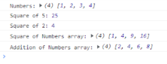

Lab 8: Anon Functions and Callbacks
Challenge
The challenge for this lab was to experiment with functions and callbacks. In the console, we first created and array of numbers and assigned it a variable we called "Numbers." We then created a multipling function and tested it. I chose to test with the numbers 5 and 3.
Problems
I had trouble with using the console at first. Whenever I pressed enter to create a new line, it would alert me that there was a syntax error when I just wasn't done writing my code. I also had trouble simply getting the function to process a result. In the end my partner was able to clarify for me where I was stuck and I was able to produce a successful function.
Results
My partner and I created a successful multipling function which we tested. You can see this in the screenshot of the website with consol.log open. Tah Dah!
